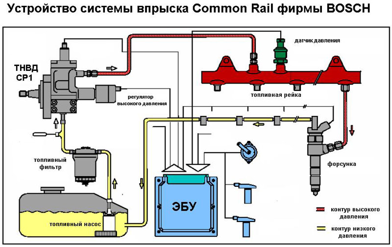
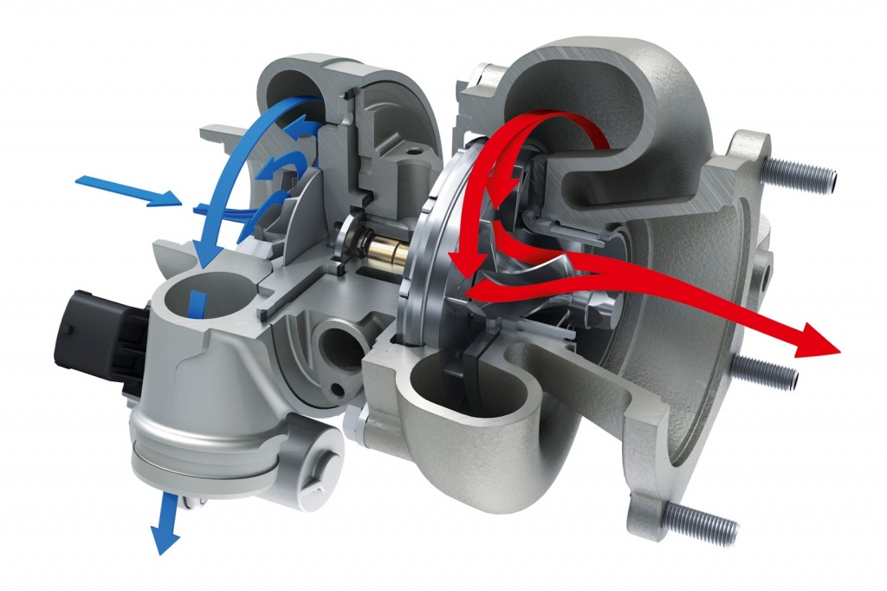

Классификация двигателей
Двигатели разделяют по нескольким параметрам: рабочему циклу, типу конструкции, типу подачи воздуха.
Классификация двигателей в зависимости от рабочего цикла
В зависимости от цикла, описывающего термодинамический (рабочий процесс), выделяют два типа моторов:
- Ориентированные на цикл Отто. Сжатая смесь у них воспламеняется от постороннего источника энергии. Такой цикл присущ всем бензиновым двигателям.
- Ориентированные на цикл Дизеля. Топливо в данном случае воспламеняется не от искры, а непосредственно от разогретого рабочего тела. Такой цикл лежит в основе работы дизельных двигателей.
Чтобы работать с современными дизельными моторами, важно уметь хорошо разбираться в системе управлениям дизелями EDC (именно от неё зависит стабильное функционирование предпускового подогрева, системы рециркуляции отработанных газов, турбонаддува), особенностях системы впрыска Common Rail (CRD), механических форсунках, лямбда-зонда, обладать навыками взаимодействия с ними.

И изучение дизелей, и бензодвигателей должно быть целенаправленным и последовательным. Рациональный вариант – изучать дизельные ДВС в виде модулей.
А для работы с агрегатами, работающими по циклу Отто, не обойтись без комплексного изучения свечей зажигания, системы многоточечного впрыска. Важно отличное знание принципов работы датчиков, каталитических нейтрализаторов.
Классификация двигателей в зависимости от конструкции
Поршневой. Классический двигатель с поршнями, цилиндрами и коленвалом. При работе принципа ДВС рассматривалась как раз такая конструкция. Ведь именно поршневые ДВС стоят на большинстве современных автомобилей.
- Поршневой. Классический двигатель с поршнями, цилиндрами и коленвалом. При работе принципа ДВС рассматривалась как раз такая конструкция. Ведь именно поршневые ДВС стоят на большинстве современных автомобилей.
- Роторные (двигатели Ванкеля). Вместо поршня установлен трехгранный ротор (или несколько роторов), а камера сгорания имеет овальную форму. У них достаточно высокая мощность при малых габаритах, отлично гасятся вибрации. Но производителям невыгодно выпускать такие моторы. Производство двигателей Ванкеля дорогостоящее, сложно подстроиться под регламенты выбросов СО2, обеспечить агрегату большой срок службы. Поэтому современные мастера СТО при ремонте и обслуживании с такими автомобилями встречаются крайне редко. Но знать о таких двигателях также очень важно. Может возникнуть ситуация, что на сервис привезут автомобили Mazda RX-8. RX-8 (2003 по 2012 годов выпуска) либо ВАЗ-4132, ВАЗ-411М. И у них стоят именно роторные двигатели внутреннего сгорания.
Классификация двигателей по принципу подачи воздуха

Подача воздуха также разделяет ДВС на два класса:
- Атмосферные. При движении поршня мотор затягивает порцию воздуха. Для вращения турбины и вдувания сжатого воздуха у турбокомпрессорных двигателей внутреннего сгорания используются непосредственно выхлопные газы.
- Турбокомпрессорные. Организована дополнительная подкачка воздуха в камеру сгорания.
Атмосферные системы активно встречаются как среди дизельных, так и бензиновых моделей. Турбокомпрессорные ДВС – в большинстве своём, дизельные двигатели. Это связано с тем, что монтаж турбонаддува предполагает достаточно сложную конструкцию самого ДВС. И на такой шаг готовы пойти чаще всего производители авто премиум-класса, спорткаров. У них установка турбокомпрессора себя оправдывает. Да, такие решения более дорогие, но выигрыш есть в весе, компактности, показателе крутящего момента, уровни токсичности. Более того! Выигрыш есть и в расходе топлива. Его требуется существенно меньше.